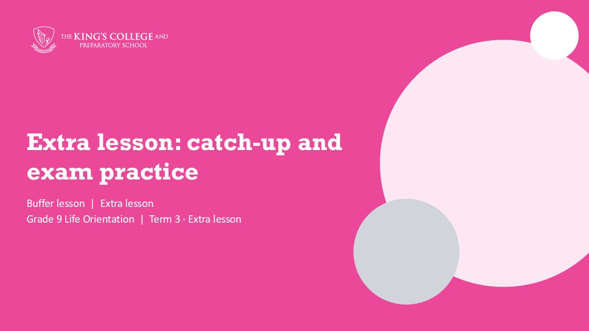

Term 3 · Extra lesson · Extra lesson: catch-up and exam practice
Extra lesson: catch-up and exam practice
Start here
Today I will
- Catch up anything I missed
- Practise exam questions on one set
- Mark and plan what to revise
Think first
Which topic from this year do you feel least ready for?
Words to know
- Exam practice set
- A group of questions at the back of your Activity Book. Do one set, then mark it.
- Bloom's level
- The kind of thinking a question needs: remember, understand, apply, analyse, evaluate, create.
- Memo
- The marking guideline with answers and how marks are given.
- Reflection
- Looking back at your marks to plan what to improve.
Slides

Notes
Choose your task
- Missed a lesson?: Catch up the activity you missed first.
- Up to date?: Do ONE exam practice set at the back of your Activity Book.
- Finished?: Mark it with the exam bank memo on Google Classroom.
- Marked?: Fill in the STOP box, then read the Handbook pages for topics you got wrong.
Remember
One set at a time: do it, mark it, learn from it.
Finished early?
Exam practice
Do ONE set of the exam practice bank at the back of your Activity Book.
- Choose the set for the topic you feel least ready for.
- Answer it using the mark allocations.
- Mark it with the exam practice memo on Google Classroom.
- Fill in the STOP box before you start another set.